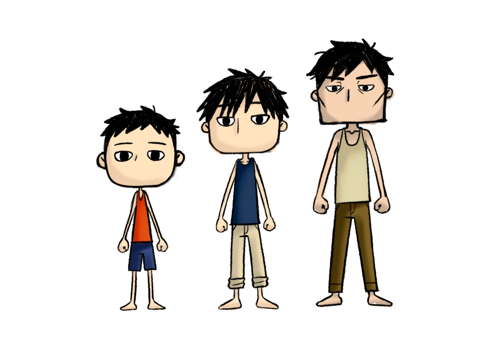
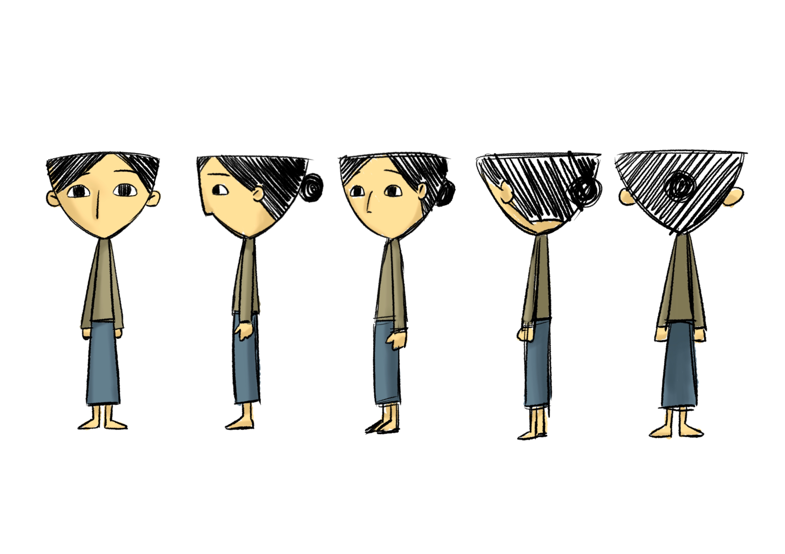

故事主軸
故事中「手印」作為兩者對彼此的依託，其上所注入的感受是語言無法描述的。只能藉著自己去與心意做連結。
母親與男孩的心理衝突為主軸，男孩尋求著家人的依託，而母親則是重視對生活的擔保。這樣的家庭關係，藉著依存過去家庭感覺的手印畫，做為將其連結並產生理解的關鍵。
把現代社會家庭裡的立場畫分，將注重孩童的家長以極端表現帶入動畫中的母；男孩則是想尋求歸屬，但因環境被迫獨立的成長期學生。希望彼此在將來接觸了社會的殘酷現實，能再次回過頭來，「看到」母親的關愛。

男孩
與一般小孩一樣，有著對家人的寄託心理。但因生於單親家庭，再加上自小學過後與母親間的關係冷落，因此從小就被迫獨立。
對家人的渴望使得他將自己的心依託到了幼兒時期，與「身為家人的母親」一同留下來的手印畫作品上。
由於比較缺乏對人的溫暖，使得長大後常常為此諸事不順。

母親
極度重視男孩的母親，受到丈夫早逝的心理打擊，使其想要及盡全力的讓男孩過上好日子，但因沒掌握好分寸，重心全跑到了賺錢工作上。
長時的工作而缺少了陪伴，當再次注意到時，男孩眼中已經沒有自己的存在，但工作壓力的打擊只讓其認為是男孩的不諒解。
...
...